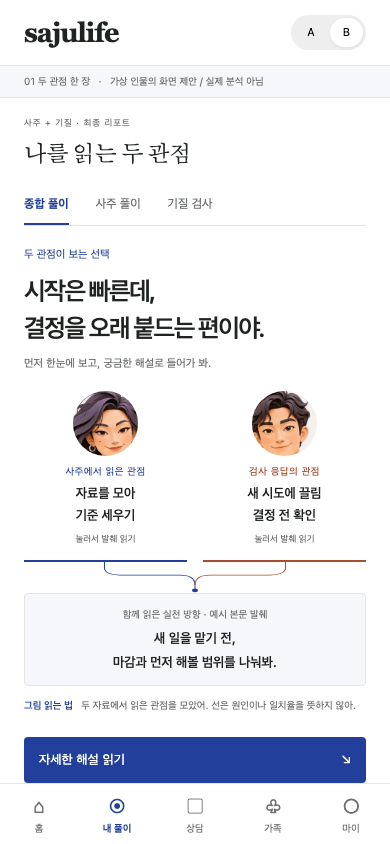
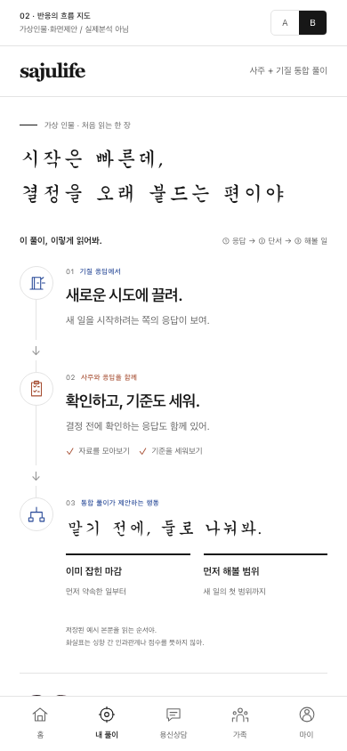
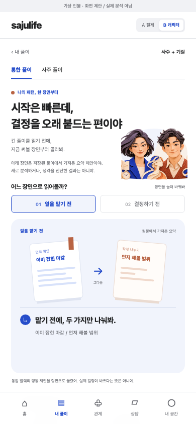
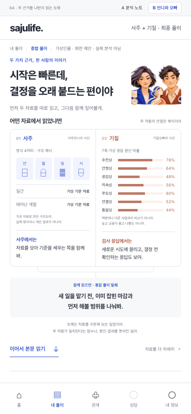

01
두 관점 한 장
언니와 오빠가 각각 읽은 관점에서
한 줄의 실천 방향으로 모입니다.

시안 열고 눌러보기 ↗02
반응의 흐름 지도
무엇에 끌리고, 어떤 단서를 읽었고,
무엇을 해볼지 순서로 보여줍니다.

시안 열고 눌러보기 ↗03
상황으로 읽기
내가 겪는 장면을 고르면,
그 상황에서 해볼 일을 그림으로 보여줍니다.

시안 열고 눌러보기 ↗04
두 근거 한눈에
추천사주 자료와 기질 막대를 먼저 보고,
짧은 통합 해석에서 본문으로 이어집니다.

시안 열고 눌러보기 ↗